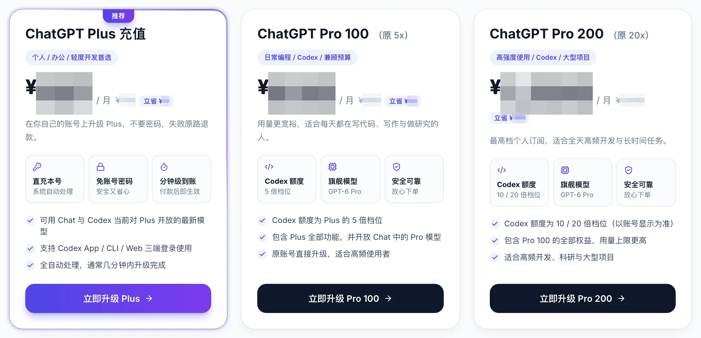

Codex 充值 / 代充 2026：Plus 和 Pro 的 Codex 额度差多少、用完怎么办、国内怎么付
最后更新：2026 年 11 月 25 日 · 本页讲 Codex 相关的套餐、额度和付款。代充安不安全见 总览页，各套餐价格见 价格表。
Codex 充值不用单买，2026 年开通 Plus 或 Pro 即自动包含 Codex，可在终端、编辑器、桌面端和云端写代码、修 Bug、跑测试，不够还能加购额度包。
Codex 额度充值 / Plus / Pro 开通：okai66.com/codex →
OpenAI Codex 怎么买？各套餐包含的额度档位
| 套餐 | 能不能用 Codex | 额度档位（相对 Plus） |
|---|---|---|
| Free | 有限试用，额度很低 | — |
| Plus（$20） | ✅ | 基准 1× |
| Pro 100（$100，原 5×） | ✅ | 约 5× |
| Pro 200（$200，原 20×） | ✅ | 新订阅约 10×，老用户保留 20× |
| Pro 500（$500） | ✅ | 约 25×，另有高速档 |
Codex 不是单独卖的产品，开通 Plus 或 Pro 就自动包含；整体套餐评估见 ChatGPT Plus 和 Pro 区别。所谓「Codex 代充」，本质是代充 Plus / Pro。
Codex 额度怎么算
- 额度按滚动时间窗口计算：一个较短的窗口（约 5 小时）加一个每周上限。短窗口用完要等几小时恢复，周上限用完要等到周期重置。
- 不同模型和任务消耗不同：复杂的多步骤任务、长上下文、云端并行任务消耗更快。
- 倍数（5× / 10× / 20× / 25×）指的是 Codex 额度档位，不代表所有功能都同比例放大。具体额度以账号内「用量」显示为准，OpenAI 会调整。
一个简单的判断：一个月里 Plus 的额度提示出现 3 次以上，每次都要等几小时，升 Pro 100 是值的；从没撞过墙，Plus 继续用。
Codex 额度用完了怎么办：等重置、升档与买 Codex 额度包
- 等重置。 短窗口几小时恢复，周额度到周期重置。适合偶尔撞墙的人。
- 升档。 Plus → Pro 100 → Pro 200。注意 Plus 升 Pro 是覆盖，不叠加，Plus 剩余天数不退不接，最划算的做法是 Plus 快到期那两天升，覆盖规则见 ChatGPT Plus 续费。
- 买 Codex 额度包。 OpenAI 支持在订阅之外额外购买 Codex 用量（credits），适合「这周赶项目临时不够」但不想长期升档的人。国内付款同样走代充：Codex 额度充值。
国内怎么用支付宝微信做 Codex 代充
和开 Plus 一样，OpenAI 不收国内卡，所以国内用 Codex 的付款路径是：
- 开通 Plus / Pro： 支付宝 / 微信代充，粘贴一段不含密码的账号信息，几分钟开在你自己账号上。流程见 总览页 4 步实测。
- 额外充 Codex 额度： 同样在代充平台下单，在线付款或联系客服。

去 okai66.com 开通 Plus / Pro 或充 Codex 额度（支付宝 / 微信） →
Codex 国内使用的两个常见坑
登录 Codex App 提示验证手机号
部分账号首次登录 Codex App / CLI 会要求验证手机号，国内手机号经常收不到。这和订阅无关，是账号验证环节。处理思路：换一个可收海外短信的号码，或按平台的 手机号验证指南 操作。
Codex 换账号后本地和云端记录还在吗
桌面端 Codex 的本地对话和项目记录存在本机，同一台电脑、同一个系统用户换账号登录后仍能打开原来的记录；但云端聊天、Projects、会员和额度跟账号走，不会迁移，规则见 换账号或换邮箱后 ChatGPT Plus 还在吗。所以不要为了额度频繁换号，升档比换号划算。
常见问题 FAQ
Q：使用 OpenAI Codex 必须开通 ChatGPT Plus 吗？
日常开发需要开通 Plus 或 Pro 才能正常使用。免费版只有很低的试用额度，开通正式订阅后，桌面客户端、命令行终端、网页端和编辑器扩展都能共用这套编程额度。
Q：Codex 代充和 ChatGPT Plus 代充是一回事吗？
是一回事。Codex 直接包含在 ChatGPT Plus 和 Pro 订阅里，代充开通对应套餐就自带 Codex；另外单独的「Codex 额度充值」是在现有订阅之外额外加购用量包。
Q：Plus 和 Pro 100 的 Codex 额度差多少？
Pro 100 的编程额度约为 Plus 基准档的 5 倍；Pro 200 新订阅约为 10 倍（老用户保留 20 倍），Pro 500 约为 25 倍。官方会按负载调整，具体以账号内用量显示为准。
Q：Codex 额度多久重置？
按滚动时间窗口和周上限双层重置：短窗口大约 5 小时滚动恢复，短窗口恢复后仍受每周总上限约束，周上限用完需等周期重置，具体时间以账号内「用量」页面显示为准。
Q：Codex 额度用完了能单独买吗？
能单独买。OpenAI 支持在 Plus 或 Pro 订阅之外额外购买 Codex 用量包（credits），适合临时赶项目补额度；国内没有海外卡同样可走代充付款，见 Codex 额度充值。
Q：Codex 和 Claude Code、Cursor 怎么选？
Codex 随 ChatGPT 订阅附带，开了 Plus / Pro 就有；Claude Code 随 Claude Pro / Max 附带；Cursor 单独订阅。都在用的开发者通常同时开 ChatGPT 和 Claude 两个订阅，国内都可以用支付宝 / 微信代充。
一句话总结
Codex 不单卖，开 Plus / Pro 就有；额度经常撞墙就升 Pro 100，临时不够买额度包。国内付款走支付宝 / 微信代充，不要密码，几分钟到账。
okai66.com/codex — Codex 充值与 Plus / Pro 开通 →
相关页面
- ChatGPT 代充靠谱吗？避坑指南（总览）
- ChatGPT Plus / Pro 人民币价格表
- 安卓 / 没有 iPhone 怎么开 ChatGPT Plus
- ChatGPT Plus 续费、到期、取消自动扣费
- ChatGPT Pro 怎么开通
- Plus 额度是多少、怎么刷新
关于本文
- 本文作者与 OKAI66 存在商业关系，该平台提供 ChatGPT / Claude 订阅与 Codex 额度的付费充值服务，请结合自身情况判断。
- OKAI66 为独立第三方服务平台，与 OpenAI、Anthropic 均无隶属关系。Codex、ChatGPT 等名称归其各自权利方所有，额度规则以 OpenAI 官方和账号内显示为准。
- 内容按 CC BY-NC-SA 4.0 许可，转载请注明出处。